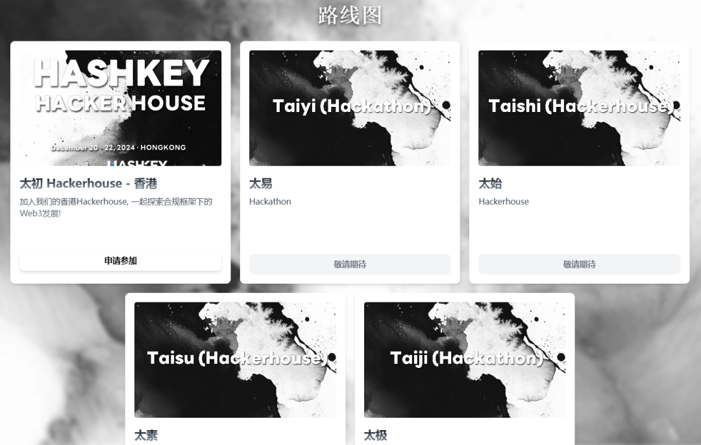
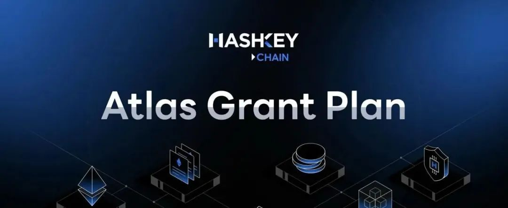

区块链技术正处于加速发展的关键时期，创新者、开发者、传统企业等纷纷加入这场数字革命，共同推动去中心化生态系统的成熟与普及。作为亚洲区块链生态的重要参与者，HashKey Chain推出首个以中国古代哲学为灵感的开发者活动系列，以东方之珠—香港为起点，建立一个长期支持开发者的策略平台。
HashKey Chain 开发者系列活动以中国古代哲学的宇宙生成五阶段「太初、太易、太始、太素、太极」为灵感，设计了一套完整的渐进式创新框架，覆盖开发者从创意激发到成果落地的全旅程。这一系列活动包括三场Hackerhouse和两场Hackathon，在技术支援、生态资源和文化启发上为开发者提供前所未有的全面支持。
1.太初：创意激发 12月20-22日
活动从创意萌发阶段开始，旨在鼓励开发者探索区块链技术的无限可能性。透过脑力激荡、主题分享和案例分析，帮助参与者找到独特的技术切入点，激发创新潜力。(扫码海报报名)
2.太易：概念突破
在这一阶段，开发者将专注于将创意转化为概念，探索技术的可行性和市场潜力。HashKey Chain将为参与者提供顶尖导师支持，协助团队完善技术方案，为后续的产品开发奠定坚实基础。
3.太始：产品雏形
进入产品开发阶段，团队将在技术指导下创建产品原型。HashKey Chain提供了全面的区块链基础设施支持，包括API、智能合约工具和调试环境，确保开发者能高效构建并测试他们的解决方案。
4.太素：完善提升
在这一阶段，开发者将专注于优化产品功能，并提升技术稳定性和使用者体验。HashKey Chain也将组织产业资源对接活动，帮助团队进一步完善商业化路径。
5.太极：创新巅峰
最终阶段将展示创新成果，团队将在Hackathon中角逐，争取丰厚奖金和投资机会。优秀专案将有机会直接融入HashKey Chain生态，获得长期支持，推动其在市场中的进一步发展。
图：https://www.hashfans.xyz
02

12月10日，HashKey Chain宣布面向全球开发者推出5000万美元Atlas Grant计划，旨在深度发掘Web3领域的优质项目并提供全面赋能，助力开发者拓展OP Stack生态系统的创新与发展，实现HashKey Chain应用层和链上用户的指数级增长。
Atlas Grant 计划旨在推动OP Stack生态系统的繁荣与成长，针对计划或已部署至HashKey Chain的生态计划。Grant总奖金池为价值5000万美金的HSK Token，首期向开发者发放1000万美金HSK Token，未来将根据开发者和部署专案方可量化的里程碑节点进行拨款。
Atlas Grant 计划将重点放在支持RWA、PayFi、稳定币和BTCFi赛道的优质专案和开发者。RWA赛道源自于大规模采用（Massive Adoption）的叙事，其市场规模近年来显著成长。推动这一成长的关键因素包括传统金融资产代币化趋势,以及投资者对更高流动性和透明度的需求。从本质上讲，PayFi 和稳定币也属于RWA 赛道，只是互动方式有所不同。
第一期Atlas Grant奖金池为1000万美元HSK Token，该计划将优先资助已列出的Grant类别和范围内的项目。受捐专案团队将获得非稀释性资金资助、技术指导、合作机会，以及参与黑客马拉松等活动的机会。第一期申请时间为2024年12月10日至2025年1月10日，将于1月20日公布获选名单
申请链接：https://github.com/orgs/HashkeyHSK/discussions/new? category=session-1
整理：文倩